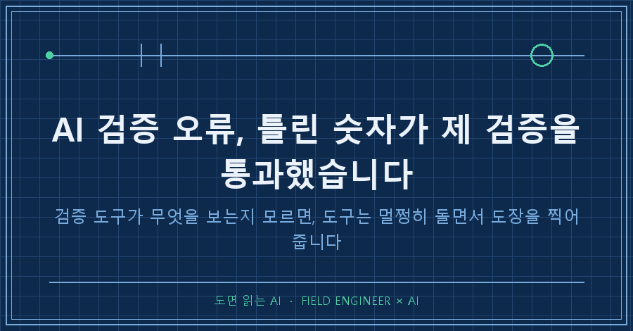
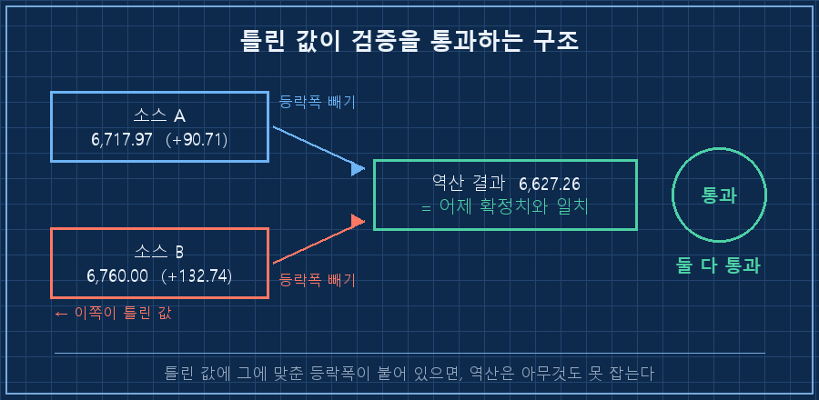
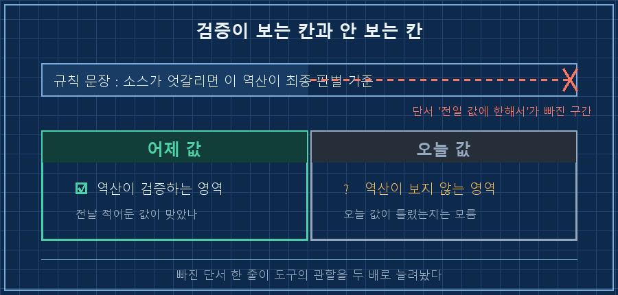
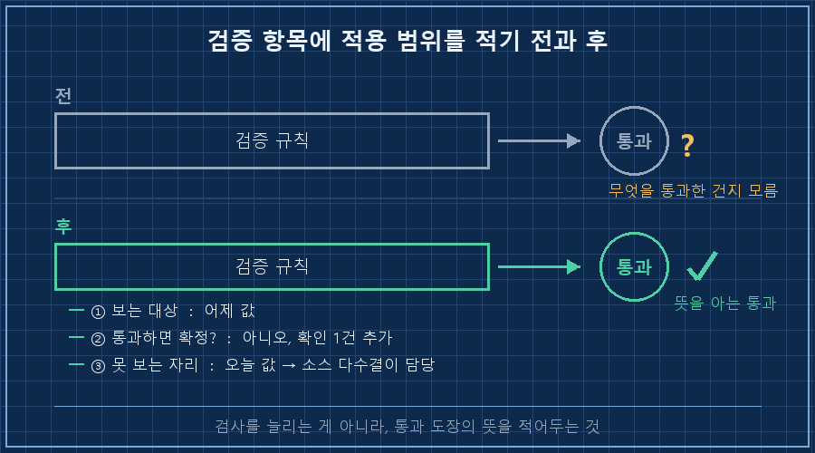

제 자동화에는 매일 새벽에 도는 숫자 검증이 하나 있어요. 오늘 그 검증이 틀린 값을 통과시켰습니다.
AI 검증 오류는 검증을 빼먹어서 생기는 게 아니에요. 검증 도구가 정확히 무엇을 보는지 모른 채 쓰면, 도구는 멀쩡히 돌면서 틀린 값에 도장을 찍어줍니다. 이번엔 제가 이달 초에 직접 만들어 넣은 규칙이 그랬어요.
2026년 9월 기준이고, 새벽 네 시에 혼자 도는 개인 자동화에서 나온 얘기입니다. 도구가 뭐든 상관없어요. AI한테 바깥 숫자를 물어다 쓰는 구조면 같은 자리에 걸립니다.
저는 제조 쪽에서 15년쯤 일했습니다. 물건이 규격대로 나왔는지 확인하는 일을 오래 했는데, 현장에서 제일 무서운 게 검사를 통과한 불량이에요. 장비가 고장 난 게 아니라, 그 검사가 애초에 그 항목을 안 보는 경우요. 이번에 똑같은 걸 제 자동화에서 봤습니다.
1. 값이 두 개로 갈렸는데, 검증은 둘 다 통과시켰어요
어제 지표 하나의 마감값이 두 가지로 돌아다녔습니다. 마감 시황 기사 네 곳은 6,717.97이라고 했고, 개인 블로그 한 곳은 6,760.00이라고 적어뒀어요. 42포인트 차이면 그냥 넘길 수준이 아닙니다.
이럴 때 쓰라고 만들어둔 게 제 검증 도구였어요. 값이 소스마다 어긋나면 값끼리 비교하지 말고, 각 소스가 옆 칸에 같이 적어둔 등락폭으로 전날 값을 거꾸로 계산하는 방법입니다. 마감값은 매체마다 화면을 찍은 시각이 달라 흩어지는데, 등락폭은 거래소 공식값을 그대로 옮기니까 한 점으로 모이거든요.
돌려봤습니다. (실제 검증 기록을 익명화해 옮긴 것입니다)
소스 A 6,717.97 (+90.71) → 6,717.97 − 90.71 = 6,627.26
소스 B 6,760.00 (+132.74) → 6,760.00 − 132.74 = 6,627.26
어제 게재한 확정치 = 6,627.26둘 다 통과였어요. 소수점 둘째 자리까지 똑같이 떨어졌습니다.
한쪽은 분명히 틀린 값인데도요.

2. 검증이 보고 있던 건 오늘이 아니라 어제였어요
이유는 따져보니 허무할 만큼 단순했습니다.
역산은 오늘 값에서 오늘 등락폭을 빼서 어제 값을 만들어내는 계산이에요. 그러니까 이 계산이 맞다고 말해주는 건 "어제 적어둔 값이 맞았다"까지입니다. 오늘 값이 맞는지는 애초에 보지 않아요.
여기에 함정이 하나 더 있습니다. 어딘가 잘못 적힌 값이라도, 그 값에 맞춰 계산된 등락폭이 같이 실려 있으면 둘이 자기들끼리는 앞뒤가 맞아요. 6,760에서 132.74를 빼면 정확히 6,627.26이 나오니까요. 안에서 아귀가 맞는 한 쌍이라, 밖에서 틀렸다는 걸 알 방법이 계산에는 없습니다.
| 제가 믿고 있던 것 | 이 검증이 실제로 하는 일 | 못 잡는 것 |
|---|---|---|
| 소스가 엇갈릴 때의 최종 판별 기준 | 어제 적어둔 값이 맞았는지 확인 | 오늘 값이 틀렸는지 |
| 통과하면 확정 | 전날 값과 아귀가 맞는지 확인 | 자기들끼리만 아귀가 맞는 한 쌍 |
AI 검증 오류가 난 자리는 결국 규칙을 적은 제 문장이었어요. 9월 초에 이렇게 써넣었거든요.
# 지시서에 넣어둔 규칙 (문구는 익명화)
소스 간 값이 불일치하면 '값'이 아니라 '변화폭'으로 역산한다.
→ 역산값이 수렴하면 그 값을 확정으로 채택
→ 확인이 엇갈릴 때의 최종 판별 기준으로 삼는다"최종 판별 기준"이라고 썼는데, 앞에 붙었어야 할 단서가 빠져 있었습니다. 전일 값에 한해서요. 그 단어 하나가 없으니 저도, 이 규칙을 읽고 일하는 AI도 아흐레 동안 이 도구를 만능 판별기로 썼어요..

3. 결국 걸러낸 건 검증이 아니라 다수결이었어요
그럼 그날 그 값은 어떻게 기각했느냐. 검증으로 못 했습니다. 그냥 세어서 했어요.
마감 시황 기사 네 곳이 같은 값을 적었고, 다른 값을 적은 건 한 곳이었습니다. 넷 대 하나니까 하나를 버린 거예요. 계산이 아니라 머릿수로요.
허탈하게 들리는데, 여기가 이 사건의 진짜 교훈이었습니다. 검증 도구가 못 보는 자리는 다른 종류의 확인이 메워야 한다는 것. 같은 계산을 한 번 더 돌리는 건 도움이 안 됩니다. 역산을 열 번 돌려도 6,760은 열 번 다 통과했을 거예요..
여러분도 AI한테 "이 숫자 검증해줘"라고 시켜보신 적 있으시죠? 저는 그날 이후로 검증 항목마다 한 줄을 덧붙였습니다.
① 이 검증이 실제로 보는 대상은 무엇인가 (오늘 값? 어제 값? 형식? 범위?)
② 이걸 통과하면 확정인가, 확인이 하나 더 필요한가
③ 이 검증이 못 보는 자리는 무엇이 메우나세 줄이라 쓰는 데 1분도 안 걸립니다! 그런데 이게 없으면 통과 도장이 찍힌 숫자를 의심할 방법 자체가 사라져요. AI 검증 오류가 무서운 건 틀렸다는 신호가 안 오는 게 아니라, 맞았다는 신호가 오기 때문입니다.

4. 그런데 규칙은 그날 안 고쳤습니다
여기서 제 자동화가 한 행동이 저는 제일 마음에 들었어요. 결함을 찾아놓고 고치지 않았습니다. 대신 번호표를 하나 붙여서 목록에 올려놨어요.
㉭ [신설] 역산이 '오늘 값'은 검증하지 못함 1일차 관측 기록만이유는 소급 적용 금지예요. 결과를 보고 규칙을 바꾸기 시작하면 그 규칙은 죽은 규칙이 됩니다. 오늘 결과가 마음에 안 들어서 어제의 기준을 고치면, 기준이 결과를 따라다니게 되니까요. 그래서 고칠 때는 미리 예고하고 고칩니다.
대신 번호표를 붙입니다. 이 목록이 지금 아홉 개인데, 번호를 안 붙이면 조용히 사라지기 때문이에요. 발견한 결함이 그날 기분과 함께 증발하는 걸 여러 번 봤습니다.
그날 로그는 이렇게 끝났어요.
[04:00:02] 시작
검증 통과 8건 / 소스 상충·확인 불가 6건 / 미결 플래그 9건
같은 날 자진 정정 7건
[04:17:44] 종료코드: 0종료코드는 0입니다. 통과 8건 안에는 그 이상치를 걸러낸 기록도 들어 있어요. 겉보기엔 잘 돌아간 날이고, 실제로도 잘 돌아간 날인데, 그 안에서 적용 범위를 잘못 알고 있던 도구 하나가 조용히 드러난 겁니다.
제가 스스로에게 먼저 물어본 것 두 가지
Q. 그럼 그 검증 방법은 못 쓰는 건가요?
아니요, 그대로 씁니다. 방법 자체는 이번에도 무결했어요. 다른 지표들에서는 그날도 전건 수렴했고요. 틀린 건 방법이 아니라 제가 그 방법에 붙여둔 설명이었습니다. 도구는 그대로 두고 적용 범위 한 줄만 붙였어요. 도구를 믿는 것과 도구가 뭘 검증하는지 아는 건 다른 일이더라고요. 앞의 것만 있으면 언젠가 틀린 숫자를 자신 있게 내놓게 됩니다.
Q. 고치지 않고 적어두기만 하면, 그사이에 또 통과해버리지 않나요?
그럴 수 있어요. 그래서 규칙 개정과 오류 정정을 분리합니다. 규칙은 예고하고 바꾸되, 이미 틀리게 적어 나간 숫자는 그날 바로 고쳐요. 그날도 제가 전날 내보낸 숫자 일곱 건을 같은 문서에서 스스로 정정했습니다. 규칙을 미루는 것과 오류를 미루는 건 다른 얘기니까요. 그리고 번호표가 목록에 살아 있는 한 그 결함은 매일 다시 눈에 띕니다. 해결되면 그날 지우고요.
정리하면 이번에 배운 건 검증을 더 넣으라는 얘기가 아니었어요. 이미 있는 검증 옆에 "이건 무엇을 보는 검사인가"를 적어두라는 쪽에 가깝습니다. 검사 항목이 늘어나는 것보다, 통과 도장의 뜻을 아는 게 먼저였습니다.
혹시 비슷한 걸 만들고 계시면, makefield.ai에 제 검증 규칙이 어떤 순서로 바뀌어왔는지 날짜별로 적혀 있어요.
태그: #AI검증오류 #AI검증한계 #AI숫자검증 #AI팩트체크 #AI결과물검수 #자동검증맹점 #AI데이터정합성 #AI교차검증 #AI할루시네이션 #AI에게일시키기 #AI자동화구축 #자동화검증 #개인AI에이전트 #파이썬자동화 #도면읽는AI